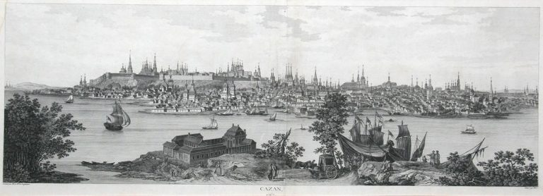

Свое существование Казань начала более 1000 лет назад. Изначально это была пограничная крепость. Спустя 4 века, в 1438 году город был захвачен ханом из Золотой Орды и назван Казанским ханством. В 1552 году Иван Грозный смог добиться захвата города, который был присоединен к Русскому царству. Во время революции в 1918 году Казань являлась одним из главных центров, где столкновения не прекращались пару лет. Спустя 2 года регион был признан автономной республикой. В 1990 г Казань стала столицей суверенной республики Татарстан.
